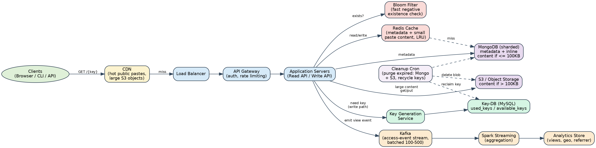
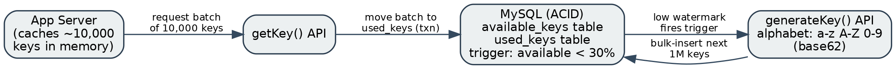
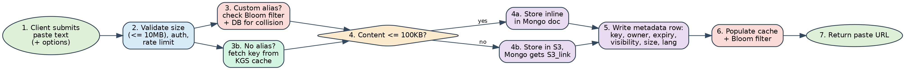
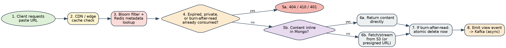
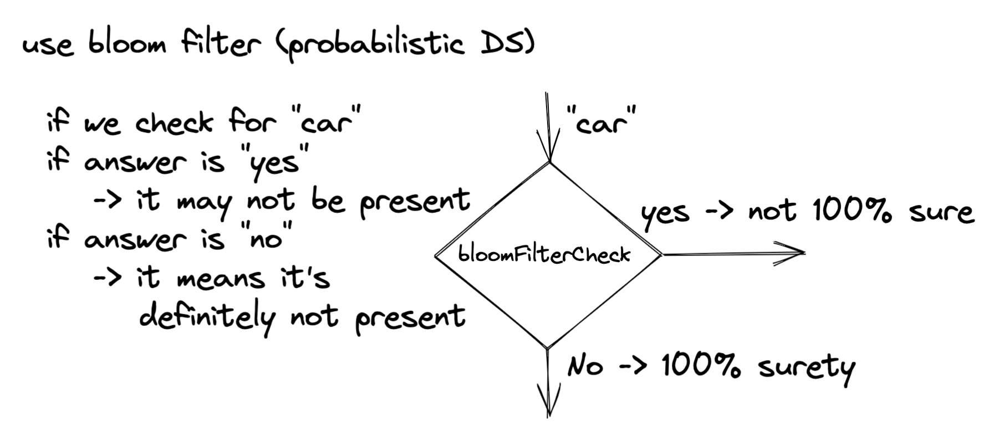
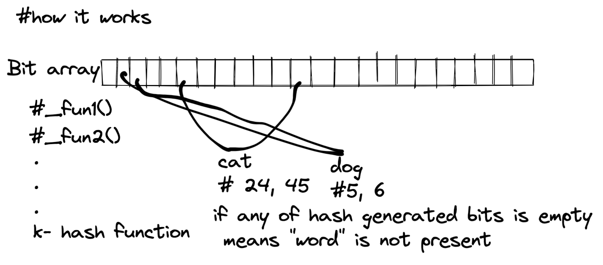

Design a Pastebin-like Service
A complete, interview-ready design walkthrough: requirements, capacity estimation, API & data model, architecture, tiered storage (database vs. object store), key generation, caching & sharding, abuse prevention, and follow-up interview questions.
Problem Statement
Design a Pastebin-like web service: users paste a block of plain text and receive a short, unique URL that anyone holding the link can use to retrieve it. Comparable real-world services include pastebin.com, GitHub Gist, ghostbin, and dpaste.
Why does this problem matter in an interview?
It's deliberately similar to the URL-shortener problem — unique key generation, redirects, caching — but adds a new dimension: the payload itself can be large (up to megabytes), which forces a real conversation about where content should physically live, tiered storage, and cost — topics that a pure URL shortener never has to confront.
Why do people use a Pastebin-like service?
- Quickly sharing source code, logs, configs, or error output with a teammate or on a forum/Slack channel, without email attachments.
- Fast, no-signup sharing — paste, get a link, send the link.
- Time-boxed sharing — a paste that auto-expires is safer than a permanent public gist for sensitive debug output.
- Version-free "drop and go" — unlike a wiki or doc, there is no expectation of collaborative editing.
Clarifying Questions to Ask the Interviewer
As with any system design question, narrow the scope before designing — the first few minutes should be spent turning an open-ended prompt into a concrete spec.
- What's the maximum paste size we need to support (a few KB, or up to megabytes)?
- Is content strictly plain text, or do we need to support images/binary attachments too?
- Can users edit a paste after creation, or is content immutable once submitted?
- Do links expire? Is there a default TTL, and can users override it or disable it?
- Do we need visibility controls (public / unlisted / private-shared-with-specific-users)?
- Do we need a "burn after reading" (self-destruct after first view) option?
- Do we need view/access analytics?
- Should the service expose a public REST API for scripted/CLI use (a very common real-world use case for this product)?
- Anonymous pastes allowed, or must every paste belong to an authenticated account?
- What scale are we targeting — pastes/day, reads/day?
Requirements and Goals
Functional Requirements
- Users can submit ("paste") a block of text and receive a unique URL that retrieves it.
- Only plain text is supported for the core product (no binary/image uploads in scope).
- A paste and its link expire automatically after a default timespan; users may specify their own expiration.
- Users may optionally choose a custom alias for their paste's URL.
- Once created, a paste's content is immutable — there is no edit-in-place (a "new paste" is the mechanism for a revision).
- (Extended) Visibility control: public, unlisted (link-only), or private shared with a specific list of users.
- (Extended) "Burn after reading" — a paste that self-destructs after being viewed once.
- (Extended) View analytics per paste.
- (Extended) A public REST API — in practice, a very large share of real Pastebin-style traffic comes from scripts and CLIs (e.g., piping a build log straight to the service), not a browser.
Non-Functional Requirements
- High reliability: an uploaded paste must never be silently lost before its expiration — users treat this as their copy of the data, not just a cache of it.
- High availability: read access to existing pastes should degrade gracefully, not go fully down, since shared links are often embedded in tickets, chat threads, and documentation elsewhere.
- Low-latency reads: retrieving a paste should feel instant, including for pastes at the multi-MB end of the size range.
- Non-guessable links: paste links must not be easily guessable — no sequential/enumerable keys.
- Wide size distribution: the system must gracefully handle a wide size distribution — the overwhelming majority of pastes are small (a log snippet, a config file) while a small minority approach the maximum allowed size, and the storage design has to serve both well.
Design Considerations Specific to Pastebin (vs. a URL Shortener)
- Payload size varies enormously (bytes to megabytes) — a URL shortener's payload is always a short string; here the payload itself needs its own storage strategy.
- Cap the maximum paste size (e.g., 10 MB) to bound worst-case storage/bandwidth cost and reduce abuse potential.
- Cap custom-alias length (e.g., 16 characters) for a consistent, predictable key space, exactly as with a URL shortener.
- Content is immutable and self-contained (no links to crawl, no relationships to traverse) — this simplifies caching enormously versus a service like a wiki.
Capacity Estimation and Constraints
Pastebin-scale traffic is much smaller than a mainstream social feed, but it is still read-heavy. We'll assume a 5:1 read/write ratio — lower than a URL shortener's typical 100:1, since a paste's links are shared less broadly on average (mostly 1:1 or small-team sharing) than a marketed short link.
Traffic Estimates
Reads / day = 5 × 1M = 5 million
New pastes / second = 1,000,000 ÷ 86,400 ≈ 11.6 → round to ~12 writes/sec
Reads / second = 5,000,000 ÷ 86,400 ≈ 58 reads/sec
Assume peak traffic runs 3–5× average (a single paste going viral on a forum can spike reads sharply) → design for ~250–300 peak read QPS and ~40–60 peak write QPS.
Storage Estimates
Content stored per day = 1M × 10 KB = 10 GB/day
Retaining data for 10 years: 10 GB × 365 × 10 ≈ 36.5 TB ≈ 36 TB of raw content
Total pastes over 10 years = 1M × 365 × 10 = 3.65 billion ≈ 3.6 billion records
With a 70% max-utilization buffer (never run storage hotter than 70% full): ≈ 36 TB ÷ 0.7 ≈ 51 TB of provisioned capacity
Key Storage / Keyspace
Metadata for 3.6B keys at 7 bytes/key ≈ 25 GB — negligible next to the 36 TB of paste content
(The original reference material for this problem uses base64 with 6-character keys — 64⁶ ≈ 68.7 billion — which also works, but introduces "." and "-" into the URL path, which then need escaping; base62 avoids that at a trivial cost of one extra character.)
Bandwidth Estimates
Outgoing (reads): 58/sec × 10 KB ≈ 0.6 MB/sec
Memory / Cache Estimates
Applying the 80/20 rule to the 5 million daily reads:
Cache size ≈ 0.2 × 5M × 10 KB ≈ 10 GB — small enough to fit comfortably on a single modest Redis instance, with a second for HA
High-Level Estimate Summary
| Metric | Value |
|---|---|
| New pastes / sec | ~12 (peak ~40–60) |
| Reads / sec | ~58 (peak ~250–300) |
| Incoming bandwidth | ~120 KB/sec |
| Outgoing bandwidth | ~0.6 MB/sec |
| Content storage (10 yrs, 70% util. buffer) | ~51 TB provisioned (~36 TB actual) |
| Cache memory (hot set) | ~10 GB |
| Recommended key length | 7 characters (base62) |
| Max paste size | 10 MB (abuse/cost control) |
System / API Design
As with the URL shortener, REST is the natural fit: simple resource-oriented operations, and the read path maps cleanly onto standard HTTP GET semantics and caching headers.
Create a Paste
POST /api/v1/pastes
Request body:
{
"content": string, // required, plain text, <= 10 MB
"custom_alias": string, // optional, max 16 chars
"title": string, // optional
"syntax": string, // optional, e.g. "python", "json", "plaintext"
"expire_at": string, // optional ISO-8601 timestamp (default applied if omitted)
"visibility": "public" | "unlisted" | "private", // optional, default unlisted
"allowed_users": [user_id, ...], // optional, only used when visibility = private
"burn_after_read": boolean, // optional, default false
"api_key": string // required — identifies caller, used for quota
}
Response 201 Created:
{ "paste_url": "https://paste.bin/aB3xQ9z", "expire_at": "2026-10-16T00:00:00Z" }
Errors: 400 invalid input / too large · 409 alias already taken · 401 unauthenticated · 429 rate-limitedRetrieve a Paste
GET /api/v1/pastes/{key}
Response 200:
{ "content": "...", "syntax": "python", "created_at": "...", "title": "..." }
Not found -> HTTP 404
Expired -> HTTP 410 Gone
No permission (private paste) -> HTTP 401 / 403
Note: if burn_after_read is set, a successful 200 response atomically deletes the paste server-side.Delete a Paste
DELETE /api/v1/pastes/{key}
Auth: must be the owning user (or an admin)
Response 200: { "status": "removed" }Analytics (Extended)
GET /api/v1/pastes/{key}/stats
Response 200: { "total_views": 482, "views_by_day": [ ... ], "top_referrers": [ ... ] }Data Model and Storage Strategy
Nature of the Data
- Billions of records over the service's lifetime, but far fewer than a URL shortener at comparable popularity (write volume here is ~15× lower in our estimate).
- Each metadata object is small (well under 1 KB), but the associated content object varies from bytes to megabytes — a completely different profile from a URL shortener's fixed-size payload.
- No relationships between pastes; only an optional owner (user) relationship and, for private pastes, an allow-list of viewer user IDs.
- Content is immutable and write-once — no in-place updates to worry about, which simplifies caching and replication considerably.
Core Schema
| Collection: paste | |
|---|---|
| key (PK) | varchar(16) |
| content (inline, only if size ≤ 100 KB) | text / binary, nullable |
| object_store_ref (only if size > 100 KB) | varchar(512), nullable |
| size_bytes | int |
| syntax / language hint | varchar(32) |
| owner_user_id (nullable — anonymous allowed) | bigint |
| created_at | datetime |
| expires_at | datetime |
| visibility | enum(public, unlisted, private) |
| allowed_user_ids (private only) | array<bigint> |
| burn_after_read | boolean |
| view_count (denormalized, async-updated) | bigint |
| Table: user | |
|---|---|
| user_id (PK) | bigint |
| name / email | varchar(64) / varchar(128) |
| plan (free / paid — drives quota + max paste size) | varchar(16) |
| created_at / last_login | datetime |
Two-Tier Content Storage — the Key Pastebin-Specific Decision
A URL shortener's payload is always a short string, so one datastore handles everything. A Pastebin payload ranges from bytes to 10 MB, which makes a single storage tier a poor fit either way: a document/metadata store optimized for fast small-object lookups gets bloated and slow if it also has to hold multi-megabyte blobs, while object storage alone adds unnecessary latency for the common case of a tiny snippet.
The recommended approach — and the one reflected in the reference design notes for this problem — is a size-based threshold, e.g. 100 KB:
- Content ≤ 100 KB (the large majority of pastes, given our ~10 KB average): store inline as part of the metadata document. One read, one round-trip, lowest possible latency.
- Content > 100 KB: store the blob in object storage (e.g., Amazon S3 or equivalent), and keep only a reference (
object_store_ref) in the metadata document. The read path fetches metadata first, then streams/redirects to the object store only when needed.
This split is also a cost decision: general-purpose object storage runs roughly 5–15× cheaper per GB than keeping the same bytes in a database or document store's primary storage (illustrative public cloud list-pricing ballpark, not a specific quote). Since a small number of large pastes can account for a disproportionate share of total bytes stored, routing exactly that tail to the cheapest tier — while keeping the fast common case inline — gets most of the latency benefit and most of the cost benefit at the same time.
SQL vs. NoSQL
The metadata/content-inline store should be a horizontally-scalable document or wide-column store (MongoDB, Cassandra, or DynamoDB) — the variable-size, schema-flexible content field (plain inline text vs. an object-store pointer) maps naturally onto a document model, and the access pattern is a simple lookup by key. As with the URL shortener, keep the Key Generation Service's key pool on a small, strictly ACID-compliant relational store (MySQL/Postgres) even though the bulk data plane is NoSQL — that coordination-heavy, low-volume piece is exactly where ACID guarantees earn their cost.
High-Level Design
Clients go through an API Gateway (authentication, rate limiting) and a load balancer to a fleet of stateless application servers exposing separate Read and Write APIs. Application servers check a Bloom filter and Redis cache before falling back to a sharded MongoDB metadata store; content larger than the inline threshold is stored in and served from S3, fronted by a CDN for hot large objects. A Key Generation Service (backed by an ACID-compliant MySQL key pool) supplies unique paste keys. Access events are emitted asynchronously to Kafka, aggregated by Spark Streaming, and landed in an analytics store. A cleanup cron reclaims expired pastes from both MongoDB and S3, and recycles their keys.

Key Design Principles Reflected in the Diagram
- Read/write split at the API level: dedicated Read API / Write API, since their scaling characteristics, caching behavior, and failure modes differ.
- Two storage tiers reachable directly from the application layer: inline metadata-store content vs. object storage, chosen per-request by a simple size check.
- Asynchronous by default: everything not required to answer "what does this key point to?" (analytics, cleanup) is asynchronous and off the critical path.
- CDN in front of two tiers: a CDN sits in front of both the metadata read path (for very hot small pastes) and the object-storage path (for hot large pastes) — the same caching principle applied at two different size tiers.
Deep Dive — Generating the Paste Key
This is functionally identical to the URL-shortener problem: we need a short, unique, non-guessable identifier for each paste. The same four approaches apply, with the same recommended default.
| Approach | Summary | Verdict for Pastebin |
|---|---|---|
| A. Hash content + Base62-encode | Hash the paste content (optionally salted), truncate, encode | Content-hash keys enable dedup (see "Content Deduplication" below) but reintroduce collisions and are deterministic unless salted |
| B. Auto-increment counter + Base62 | Convert a DB auto-increment ID to a Base62 string | Simple but sequential/guessable and a write bottleneck — avoid for a public-facing key |
| C. Offline Key Generation Service (recommended) | Pre-generate random unique keys in a small ACID key pool; app servers check out batches | Best default — no runtime collisions, keys are non-guessable, minimal per-request latency |
| D. Distributed generators (Zookeeper / Snowflake) | Coordinator-free ID minting for multi-region writes | Only needed once multiple regions must mint keys concurrently |

getKey(); MySQL moves them from available_keys to used_keys inside a transaction, and a low-watermark trigger (available < 30%) calls generateKey() to bulk-insert the next 1 million Base62 keys — identical mechanism to the URL-shortener design.Mechanics: a standalone service pre-generates random Base62 strings and stores them split across available_keys and used_keys tables in a small MySQL instance chosen specifically for its ACID guarantees. Application servers check out batches of ~10,000 keys into local memory; a trigger fires the generator to mint the next ~1 million keys once the available pool drops below ~30%. If an application server crashes holding an unused batch, those keys are simply lost — acceptable, since 62⁷ ≈ 3.5 trillion keys dwarfs the 3.6 billion we expect to actually use over 10 years.
Deep Dive — Write Path (Creating a Paste)

- Client submits paste content plus optional metadata (custom alias, expiry, visibility, syntax hint, burn-after-read).
- The application server validates size (≤ 10 MB), authenticates the caller, and checks the rate-limit quota.
- If a custom alias was requested: check the Bloom filter, then the database, for a collision. Otherwise, pull the next key from the app server's local Key Generation Service batch.
- Decide the storage tier: content ≤ 100 KB is written inline into the metadata document; content > 100 KB is written to object storage first, and the metadata document stores only the resulting reference.
- Write the metadata row:
{key, owner, created_at, expires_at, visibility, size, syntax, burn_after_read, ...}. - Populate the Redis cache and Bloom filter so the very next read (often seconds later, from the same user pasting to share with a colleague) is fast.
- Return the paste URL to the client.
Step 5 is the only step that must be strongly consistent — a lost or duplicated key here is a correctness bug. Cache population and analytics can be eventually consistent.
Deep Dive — Read Path (Retrieving a Paste)

- Client requests the paste URL.
- CDN / edge cache is checked first for hot public pastes (and for hot large S3 objects).
- On a miss, check the Bloom filter (instant 404 for nonexistent keys) then the Redis metadata cache.
- Check whether the paste has expired, is private without permission, or was already consumed by a prior "burn after reading" view — if so, return 410 / 401 / 404 as appropriate.
- If content is stored inline in the metadata document, return it directly — a single round-trip.
- If content lives in object storage, fetch/stream it from S3 (or issue a short-lived presigned URL so the client downloads directly, bypassing the app server entirely for very large pastes).
- If
burn_after_readis set, atomically delete the paste as part of this same request (see below) so it cannot be viewed a second time. - Asynchronously emit a view event to Kafka for analytics — never blocking the response.
Burn-After-Read — a Genuine Concurrency Hazard
- Fix: make the read-and-delete a single atomic operation at the data layer — e.g., MongoDB's
findOneAndDelete(or an equivalent conditional delete with a compare-and-swap on a "consumed" flag) — so exactly one caller ever receives the content and every other concurrent caller gets a 404. - This has to happen at the source-of-truth store, not the cache: a cache-first read could return content to N callers before the delete ever reaches the database.
- If content is also in the CDN/edge cache, issue an immediate purge alongside the atomic delete — otherwise the edge could keep serving a "burned" paste until its TTL naturally expires.
Deep Dive — Tiered Storage (Database vs. Object Store)
This is the design decision that most distinguishes Pastebin from a URL shortener, so it's worth its own section rather than folding it into the data model.
Why not store everything in the metadata database?
- Document/metadata stores are tuned for many small, fast lookups — multi-megabyte blobs bloat indexes, slow down backups/compaction, and crowd out the working set that should be living in memory/cache.
- Per-GB storage cost in a database or document store is typically 5–15× higher than commodity object storage (illustrative public list-pricing ballpark) — paying database-tier prices for bytes that are just being held, not queried, is wasteful at billions-of-records scale.
Why not store everything in object storage?
- Object storage typically adds tens of milliseconds of extra latency versus an in-memory/cache hit — fine for a rare multi-MB paste, wasteful overhead for the common 1–10 KB snippet that is the bulk of traffic.
- A pure object-storage design still needs a fast index (key → object location, expiry, visibility) somewhere — you end up building a metadata store anyway.
The Threshold-Based Hybrid (Recommended)
Pick a size threshold (100 KB, per the reference design) and branch the write path on it: inline for everything at or below the threshold, object storage above it. Because the average paste in our estimate is only ~10 KB, the large majority of traffic never leaves the fast, single-round-trip path — only the minority of pastes near the 10 MB cap pay the extra object-storage hop, and those are precisely the requests where a few extra milliseconds matter least relative to transfer time.
Deep Dive — Caching Strategy
Redis Cache (Cache-Aside)
- Cache metadata and small inline content together (they're fetched together anyway); cache large-paste metadata but let the CDN/object-store layer handle the blob itself.
- Eviction: LRU, sized to the ~10 GB hot-set estimate from the capacity-estimation section above — comfortably a single small Redis instance plus a replica for HA.
Bloom Filter for Fast Negative Lookups
Exactly as in a URL shortener: a Bloom filter of all active paste keys lets the read path reject nonexistent/scanned keys before touching Redis or MongoDB.


Worked sizing example (carried over from the reference notes): for ~40 million entries at a reasonable false-positive rate, a bit array of about 159 MB with k ≈ 25 hash functions is sufficient.
CDN
Front both the metadata read path (for hot public pastes) and the object-storage path (for hot large pastes) with a CDN. This is especially valuable here because a single popular paste (a widely-shared error log or leaked snippet) can spike reads by orders of magnitude with no warning.
Deep Dive — Content Deduplication (Optional Extension)
At scale, many users paste byte-identical content (a common stack trace, a popular config template, a widely-copied snippet). Content-addressable storage — keying stored objects by a hash (e.g., SHA-256) of their content rather than by the paste's own key — lets identical pastes share the same underlying storage.
- Benefit: meaningful storage savings when duplication is common, without changing the user-facing key scheme (the paste key still maps to a hash pointer, one extra layer of indirection).
- Cost — deletion: multiple paste keys can now reference the same stored blob, so a naive delete-on-expiry would break other still-active pastes pointing at the same content. This requires reference counting (only physically delete the blob when its last referencing paste expires).
- Cost — a subtle privacy leak: content-addressing lets anyone who already knows a piece of content confirm someone else pasted the exact same bytes (by computing the same hash and checking existence), which matters if pastes are meant to be confidential.
- Verdict: worthwhile for a public, non-sensitive paste tier (e.g., public code snippets) where storage savings are real and confidentiality isn't a concern; skip it (or scope it only to the public-visibility tier) for anything private.
Data Partitioning and Replication
- Hash-based partitioning of the metadata store by paste key, using consistent hashing so a shard add/remove only reshuffles a small, bounded fraction of keys (as opposed to range partitioning by key prefix, which risks unbalanced shards if key generation happens to skew toward certain prefixes).
- Replicate each metadata shard (e.g., 3×) across availability zones for durability and to absorb the 5:1 read skew via read replicas.
- Object storage (S3 or equivalent) already provides its own durability/replication guarantees — no additional partitioning scheme is needed at the application layer for that tier.
Deep Dive — Analytics Pipeline
Identical pattern to a URL shortener: view events (paste key, timestamp, referrer, viewer geo/IP, user agent) are emitted asynchronously to Kafka right after the response is sent, batched (e.g., 100–500 events) to reduce I/O overhead, and aggregated by Spark Streaming into a separate analytics store that powers the stats API. Losing a handful of events on a consumer crash is an acceptable trade — Kafka is not the source of truth for paste content or metadata.
Rate Limiting and Abuse Prevention
Pastebin-style services have a well-documented real-world problem: their easy, low-friction, often-anonymous publishing model makes them a popular dumping ground for malware command-and-control configuration, phishing-kit source, and leaked/exfiltrated credentials or data. This deserves more attention here than in a typical URL shortener design.
- Per-
api_key/ per-IP token-bucket rate limiting on paste creation, enforced at the API gateway, exactly as with a URL shortener. - Automated content scanning at write time: pattern/regex and secret-scanning rules (AWS/API key formats, private key headers, common credential-dump shapes) to flag likely-sensitive or malicious content for review or automatic quarantine.
- Integration with threat-intel/malware-signature feeds so known malicious payloads are blocked or flagged automatically rather than relying solely on manual abuse reports.
- A clear, fast abuse-report → review → takedown workflow, since legal/compliance requests (copyright, malware hosting, doxxing) are a normal and recurring operational reality for this product category.
- CAPTCHA or proof-of-work for anonymous, unauthenticated high-volume posting to raise the cost of automated abuse without blocking legitimate low-volume anonymous use.
Security, Privacy and Permissions
- Visibility model: public (listed/discoverable), unlisted (accessible only via the exact link — the default), and private (restricted to an explicit
allowed_user_idslist) — matching the visibility field in the schema. - Private paste content in object storage should use short-lived presigned URLs rather than public object URLs, and ideally server-side encryption at rest.
- Non-guessable keys double as a security control for unlisted pastes — the "security" of "unlisted" entirely depends on the key space not being enumerable.
- Input handling: enforce the size cap server-side (never trust a client-declared size), and treat paste content as inert data everywhere it's rendered (escape/sandbox on display to prevent stored-XSS if pastes are ever rendered as HTML rather than plain text).
- TLS everywhere; audit logging on private-paste access and on any administrative content takedown.
Expiration and Storage Cleanup
- Apply a default TTL if the user doesn't specify one; honor a user-specified expiration otherwise.
- Lazy deletion on access for the common case: an expired paste is deleted the moment someone tries to view it, returning 410 Gone.
- A periodic Cleanup Cron job (low-traffic window) sweeps expired rows out of the metadata store, deletes the corresponding object-storage blob when one exists, and updates/rebuilds the Bloom filter.
- Ordering matters for the two-tier storage model: delete (or mark tombstoned) the metadata row first, then delete the object-storage blob — this ordering fails safe (a dangling, harmless orphaned S3 object) rather than fails dangerous (a metadata row pointing at content that no longer exists).
- After cleanup, return the freed key to the Key Generation Service's available pool for reuse.
Load Balancing
Load-balancing layers sit between clients and the API gateway, between application servers and the metadata store, and between application servers and the cache tier — the same three-tier pattern as a URL shortener. Start with round-robin; move to least-connections or latency-weighted balancing if specific shards or object-storage regions become hot.
Scaling to Multiple Regions
- Run each region active-active with its own application tier, cache, and metadata replica set; route users to the nearest region via Geo-DNS/anycast.
- Object storage: most cloud object stores natively support cross-region replication — lean on that rather than building custom blob replication.
- Use a coordination-free key generation approach (Zookeeper-assigned ranges or Snowflake IDs) once multiple regions must mint keys concurrently, exactly as in the URL-shortener design.
- Analytics pipelines can run per-region and roll up centrally on a slower cadence — clickstream/view aggregation has no need to be synchronous across regions.
Bottlenecks, Single Points of Failure, and Trade-offs
| Risk / Bottleneck | Mitigation |
|---|---|
| Key Generation Service / key-DB down | Hot standby replica; app servers hold a local batch of pre-fetched keys so a brief outage doesn't stall writes |
| A viral paste overwhelms one shard / the object store | CDN edge caching in front of both tiers; cache replication absorbs read spikes before they reach MongoDB or S3 |
| Metadata store bloated by large inline content | Size-based tiering threshold routes large blobs to object storage instead |
| Burn-after-read race condition | Atomic read-and-delete at the data layer, never cache-first for this flow |
| Orphaned object-storage blobs after a partial delete | Delete metadata first, blob second — fails safe toward a harmless orphan rather than a dangling pointer |
| Service used to host malware / leaked secrets | Content scanning at write time, threat-intel integration, fast takedown workflow |
| Guessable/enumerable paste keys | KGS-style random key issuance (Approach C/D), never a raw incrementing counter |
One-Page Design Summary
| Dimension | Recommended choice |
|---|---|
| Paste key alphabet / length | Base62, 7 characters (≈3.5 trillion keyspace) |
| Key generation | Offline Key Generation Service (shared pattern with URL shorteners) |
| Metadata store | Sharded document/wide-column store (MongoDB / Cassandra / DynamoDB) |
| Content storage | Two-tier: inline in metadata doc if ≤ 100 KB, else object storage (S3) with a reference |
| Partitioning | Hash-based with consistent hashing on the paste key |
| Caching | Redis (cache-aside, LRU) + Bloom filter for negative lookups + CDN for hot small and large pastes alike |
| Analytics | Async via Kafka → Spark Streaming → analytics store |
| Abuse prevention | Per-key/IP rate limiting + automated content/secret scanning + takedown workflow |
| Burn-after-read | Atomic read-and-delete at the source-of-truth store, plus CDN purge |
| Cleanup | Lazy delete on access + periodic cron across both storage tiers; keys recycled to KGS |
Common Interview Questions
Beyond the core design, expect the interviewer to pressure-test individual components — these are organized by theme for focused rehearsal.
Storage and Scaling
Correctness and Concurrency
Product and API Design
Security and Abuse
Reliability and Operations
Extensions
Key Takeaways
References
- Educative — "Grokking the System Design Interview": Designing Pastebin (course material, user-provided reference); the same source explicitly notes Pastebin shares its partitioning, caching, load-balancing, and security design with the URL-shortener chapter.
- Community write-ups on Pastebin-style system design consulted for storage-tiering cost trade-offs, content-addressable deduplication, and burn-after-read concurrency handling (grokkingthesystemdesign.com, systemdesigninterview.com, enjoyalgorithms.com, and related public system-design guides).
- User's personal prep notes (Paste Bin.docx): MongoDB + S3 tiering at a 100 KB threshold, Kafka + Spark analytics pipeline, MySQL-backed Key Generation Service, Bloom filter sizing example, and the public/private/allowed-user visibility model — incorporated throughout the Data Model, Key Generation, Tiered Storage, Caching, and Security sections above.